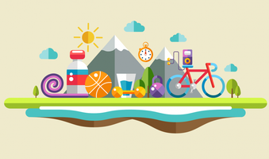
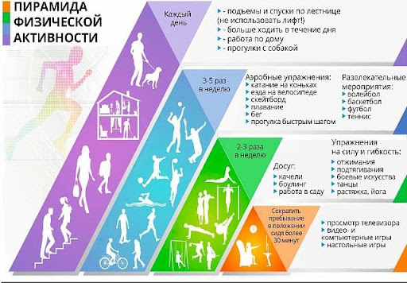

Регулярная физическая активность способствует не только укреплению и сохранению здоровья, но и достоверно снижает риск развития
важнейших социально- значимых заболеваний: диабета II типа, рака, гипертонии.
Физическая активность оказывает в долгосрочной перспективе положительное влияние на здоровье, и улучшает качество жизни.
Преимущества регулярной физической активности
- Снижение риска инфаркта
- Снижение и нормализация веса
- Снижение содержания холестерина в крови
- Снижение риска развития диабета II типа
- Снижение риска развития некоторых видов рака
- Снижение риска развития гипертонии
- Укрепление костной ткани, снижение риска рарзвития остеопороза и переломов.
- Улучшение координации и снижение риска падений
- Сокращение сроков выздоровления и реабилитации при госпитализациях
- Улучшение самочувствия и настроения
- Нормализация сна
- Положительное влияние на эмоциональный фон
Цель: 30 минут в день и больше
Физическая активность будет оказывать положительное воздействие на состояние здоровья только при достаточной продолжительности
и регулярности. Согласно научным исследованиям достаточно 30 минут ЕЖЕДНЕВНОЙ активности умеренной интенсивности.
Быть физически активным — это не только посещать спортзал или заниматься каким либо конкретным видом спорта,
требующим специального места, оборудования или инвентаря. Заниматься хоть какой-нибудь физической активностью лучше,
чем вообще ничего не делать.
Как увеличить ежедневную активность
- Пройдитесь, вместо того, чтобы пользоваться транспортом
- Выходите на одну-две остановки раньше и идите пешком оставшуюся часть пути
- Поднимайтесь по лестнице, отказавшись от лифта
- Активно играйте с детьми
- Слушайте любимую музыку и танцуйте
